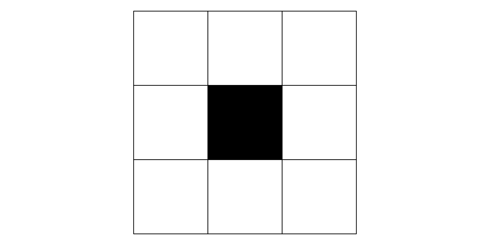
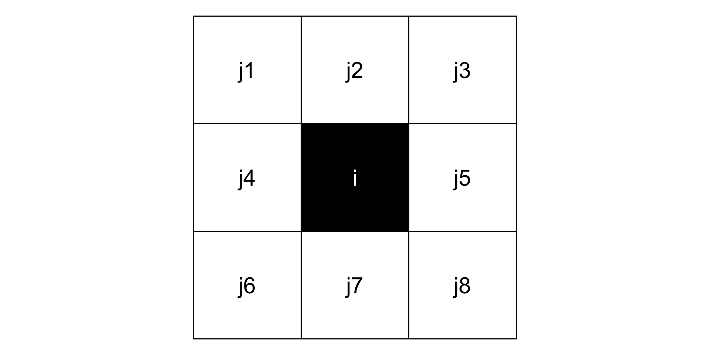
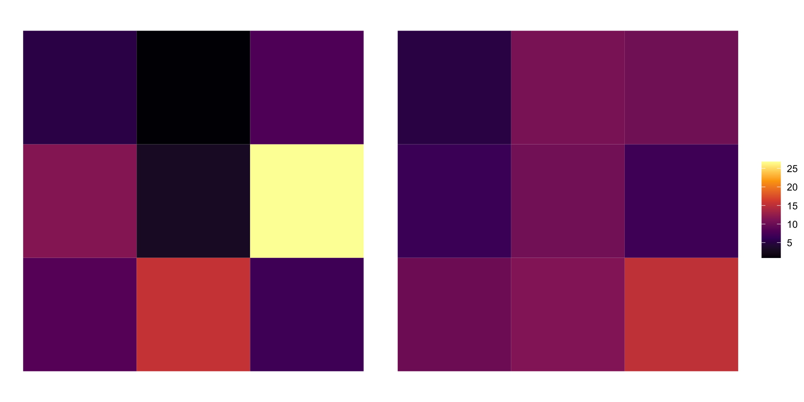

spatial analysis
weights & neighbors in sfdep
Objective:
calculate the spatial lag
The Spatial Lag
- The weighted average of a variable in a neighborhood
\[Wy_i = \sum_{j = 1}^{n} W_{ij} * yj\]
- it’s a formula which is tough lets break it down
\(ij\)
- \(i\) is the observed element of a vector (black)
- \(j\) is that element’s neighbors in space (white)
- \(ij\) the neighbors of element \(i\)

\(ij\)

\(yi\)
- \(yi\) is the observed value at each location

\(W_{ij}\)
- The spatial weights
- For simplicity: row standardized weights
- \(1 \div card(i)\)
- cardinality is the number of neighbors
- 8 neighbors
Code
cardi <- 8
wij <- rep(1, cardi) / cardi
wij
#> c(0.125, 0.125, 0.125, 0.125, 0.125, 0.125, 0.125, 0.125)\(\sum_{j = 1}^{n} W_{ij} * yj\)
values <- c(8.4, 15.5, 6.9, 11.5, 3, 26.8, 5.2, 0.9, 7.9)
# neighbor index
nbs <- c(1:4, 6:9)
# create neighbor values
yj <- values[nbs]
# multiply each element
wij * yj[1] 1.0500 1.9375 0.8625 1.4375 3.3500 0.6500 0.1125 0.9875# the spatial lag
sum(wij * yj)[1] 10.3875Observed vs. Lagged

Understanding the lag
- it is the average value of the neighborhood
- “expected value” of the neighborhood
- summarizes values of \(x\) for an observation \(i\)’s neighborhood
using {sfdep}
a tidy interface to spdep
library(sfdep)
library(dplyr)Identifying Neighbors
- simplest way using
st_contiguity() - requires
sforsfcobject - Queen contiguity by default
- shared sides and corners
data(guerry, package = "sfdep")
nb <- st_contiguity(guerry)
nbNeighbour list object:
Number of regions: 85
Number of nonzero links: 420
Percentage nonzero weights: 5.813149
Average number of links: 4.941176 nb class objects
nbclass fromspdep
attributes(nb)$class
[1] "nb" "list"
$region.id
[1] "1" "2" "3" "4" "5" "6" "7" "8" "9" "10" "11" "12" "13" "14" "15"
[16] "16" "17" "18" "19" "20" "21" "22" "23" "24" "25" "26" "27" "28" "29" "30"
[31] "31" "32" "33" "34" "35" "36" "37" "38" "39" "40" "41" "42" "43" "44" "45"
[46] "46" "47" "48" "49" "50" "51" "52" "53" "54" "55" "56" "57" "58" "59" "60"
[61] "61" "62" "63" "64" "65" "66" "67" "68" "69" "70" "71" "72" "73" "74" "75"
[76] "76" "77" "78" "79" "80" "81" "82" "83" "84" "85"
$call
spdep::poly2nb(pl = x, queen = queen)
$type
[1] "queen"
$sym
[1] TRUEnb class objects
- sparse matrix (list) of neighbors
- each element is an integer vector
- elements are row position of neighbor
nb[1:3][[1]]
[1] 36 37 67 69
[[2]]
[1] 7 49 57 58 73 76
[[3]]
[1] 17 21 40 56 61 69spatial weights
st_weights(nb)- row standardized by default
- returns list
- each element is numeric vector with same cardinality as the neighbor list
- contains the weight for the corresponding element in the
nblist - note: cardinality is the number of neighbors
- contains the weight for the corresponding element in the
spatial weights
wt <- st_weights(nb)
wt[1:3][[1]]
[1] 0.25 0.25 0.25 0.25
[[2]]
[1] 0.1666667 0.1666667 0.1666667 0.1666667 0.1666667 0.1666667
[[3]]
[1] 0.1666667 0.1666667 0.1666667 0.1666667 0.1666667 0.1666667spatial lag
- use
st_lag(x, nb, wt)
x <- guerry$crime_pers
st_lag(x, nb, wt) [1] 23047.50 26919.67 26195.50 14401.25 15038.67 15749.00 22111.67 13672.33
[9] 22859.20 11475.20 12200.14 13278.67 24734.00 11752.83 17992.60 21974.40
[17] 26711.00 19344.00 23696.71 25108.67 21643.17 18306.00 24280.00 14451.60
[25] 21047.67 21421.33 25961.50 10869.83 13415.67 17172.17 20238.25 12504.25
[33] 26723.00 21772.83 26462.20 19252.00 24683.20 20607.25 24412.00 19373.71
[41] 16000.20 23993.25 20337.86 16818.67 17113.83 13013.00 22133.00 24093.75
[49] 25661.67 22190.17 29030.00 16951.00 24509.00 24982.75 19491.50 24176.00
[57] 27639.67 21274.33 24510.33 30166.00 23459.00 16184.00 18002.00 10910.00
[65] 16251.25 15572.00 25884.25 23020.60 26495.00 24690.50 17339.00 25522.33
[73] 18970.00 19701.83 21841.00 24520.40 14025.80 14565.17 13306.67 12579.00
[81] 21529.50 23474.50 24373.17 19900.50 23373.60spatial lag
- calculate by hand using lists
ij <- nb[[1]]
wij <- wt[[1]]
xij <- x[ij]
xij * wij[1] 4696.25 6555.25 4698.25 7097.75sum(xij * wij)[1] 23047.5Using dplyr
Guerry
dplyr::glimpse(guerry)Rows: 85
Columns: 27
$ code_dept <fct> 01, 02, 03, 04, 05, 07, 08, 09, 10…
$ count <dbl> 1, 1, 1, 1, 1, 1, 1, 1, 1, 1, 1, 1…
$ ave_id_geo <dbl> 49, 812, 1418, 1603, 1802, 2249, 3…
$ dept <int> 1, 2, 3, 4, 5, 7, 8, 9, 10, 11, 12…
$ region <fct> E, N, C, E, E, S, N, S, E, S, S, S…
$ department <fct> Ain, Aisne, Allier, Basses-Alpes, …
$ crime_pers <int> 28870, 26226, 26747, 12935, 17488,…
$ crime_prop <int> 15890, 5521, 7925, 7289, 8174, 102…
$ literacy <int> 37, 51, 13, 46, 69, 27, 67, 18, 59…
$ donations <int> 5098, 8901, 10973, 2733, 6962, 318…
$ infants <int> 33120, 14572, 17044, 23018, 23076,…
$ suicides <int> 35039, 12831, 114121, 14238, 16171…
$ main_city <ord> 2:Med, 2:Med, 2:Med, 1:Sm, 1:Sm, 1…
$ wealth <int> 73, 22, 61, 76, 83, 84, 33, 72, 14…
$ commerce <int> 58, 10, 66, 49, 65, 1, 4, 60, 3, 3…
$ clergy <int> 11, 82, 68, 5, 10, 28, 50, 39, 42,…
$ crime_parents <int> 71, 4, 46, 70, 22, 76, 53, 74, 77,…
$ infanticide <int> 60, 82, 42, 12, 23, 47, 85, 28, 54…
$ donation_clergy <int> 69, 36, 76, 37, 64, 67, 49, 63, 9,…
$ lottery <int> 41, 38, 66, 80, 79, 70, 31, 75, 28…
$ desertion <int> 55, 82, 16, 32, 35, 19, 62, 22, 86…
$ instruction <int> 46, 24, 85, 29, 7, 62, 9, 77, 15, …
$ prostitutes <int> 13, 327, 34, 2, 1, 1, 83, 3, 207, …
$ distance <dbl> 218.372, 65.945, 161.927, 351.399,…
$ area <int> 5762, 7369, 7340, 6925, 5549, 5529…
$ pop1831 <dbl> 346.03, 513.00, 298.26, 155.90, 12…
$ geometry <MULTIPOLYGON> MULTIPOLYGON (((801150 20…In one fell swoop
guerry |>
transmute(
nb = st_contiguity(geometry),
wt = st_weights(nb),
crime_lag = st_lag(crime_pers, nb, wt)
)Simple feature collection with 85 features and 3 fields
Geometry type: MULTIPOLYGON
Dimension: XY
Bounding box: xmin: 47680 ymin: 1703258 xmax: 1031401 ymax: 2677441
CRS: NA
# A tibble: 85 × 4
nb wt crime_lag geometry
* <nb> <list> <dbl> <MULTIPOLYGON>
1 <int [4]> <dbl [4]> 23048. (((801150 2092615, 800669 …
2 <int [6]> <dbl [6]> 26920. (((729326 2521619, 729320 …
3 <int [6]> <dbl [6]> 26195. (((710830 2137350, 711746 …
4 <int [4]> <dbl [4]> 14401. (((882701 1920024, 882408 …
5 <int [3]> <dbl [3]> 15039. (((886504 1922890, 885733 …
6 <int [7]> <dbl [7]> 15749 (((747008 1925789, 746630 …
7 <int [3]> <dbl [3]> 22112. (((818893 2514767, 818614 …
8 <int [3]> <dbl [3]> 13672. (((509103 1747787, 508820 …
9 <int [5]> <dbl [5]> 22859. (((775400 2345600, 775068 …
10 <int [5]> <dbl [5]> 11475. (((626230 1810121, 626269 …
# … with 75 more rows
# ℹ Use `print(n = ...)` to see more rowsLet’s make something, shall we?